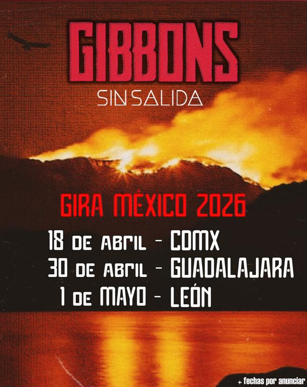

[E]l ruido de Guadalajara tiene un nuevo epicentro. Gibbons presenta "Sin Salida", su segundo EP de estudio grabado bajo la tutela de Diego Reynoso. En este material de cinco tracks, el cuarteto tapatío compacta una evolución que va del stoner más denso a la redención del blues, confirmando que la honestidad sonora es su única brújula en una actualidad bulliciosa.
La travesía comienza con "Abismo", un golpe progresivo que se atreve con la sensualidad y la cadencia, elevando la atmósfera a niveles que recuerdan a las leyendas de los 70. Sin embargo, el viaje no es lineal: en tracks como "Cóndor", la banda reclama su corona a través de un blues frenético, mientras que en "Con Mi Diabla", se entregan a un western rock poseído por armónicas y guitarras acústicas que no habrían osado tocar hace un lustro.

El EP alcanza su clímax de oscuridad en "La Red", donde el stoner y el nü metal colisionan para enfrentar a los fantasmas tecnológicos de nuestra era. "Sin Salida" cierra con el vértigo de "Sans-Abri", un túnel de sintetizadores y chelos que augura un futuro tan incierto como fascinante. Con este lanzamiento, Gibbons no solo sale de su cascarón instrumental, sino que anuncia su primera invasión nacional con fechas en CDMX, León y su natal Guadalajara.